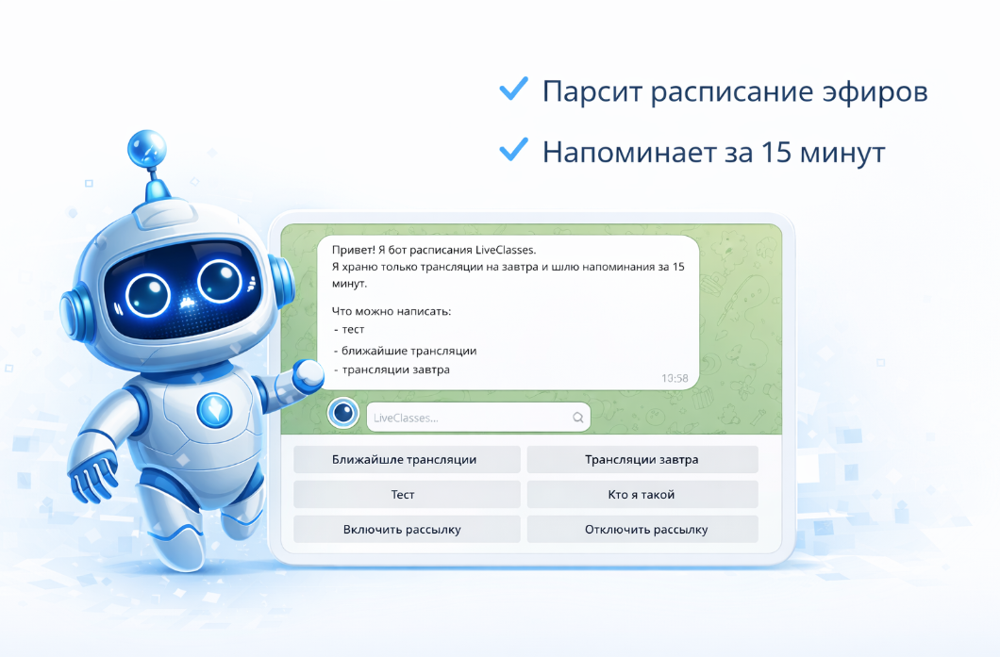
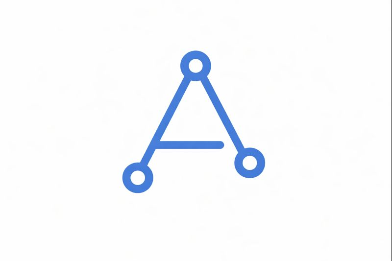
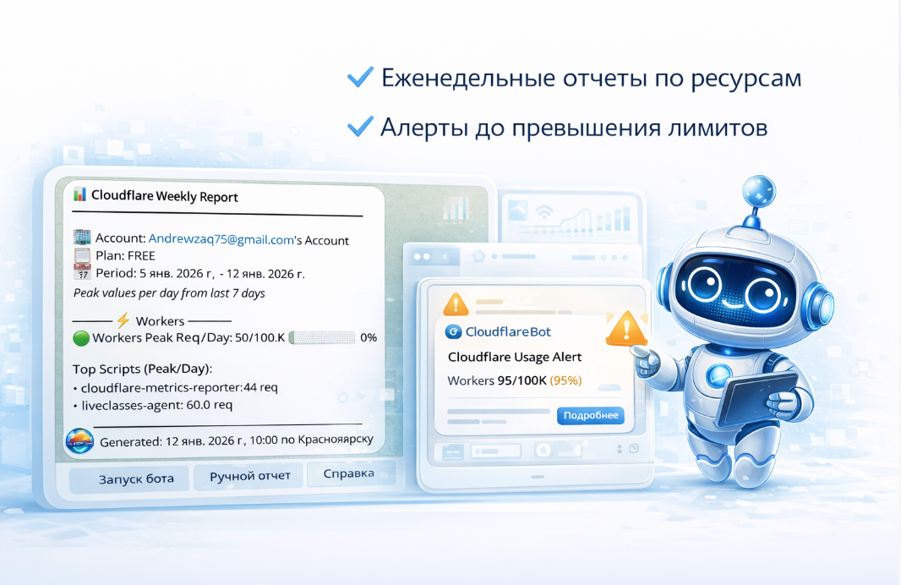
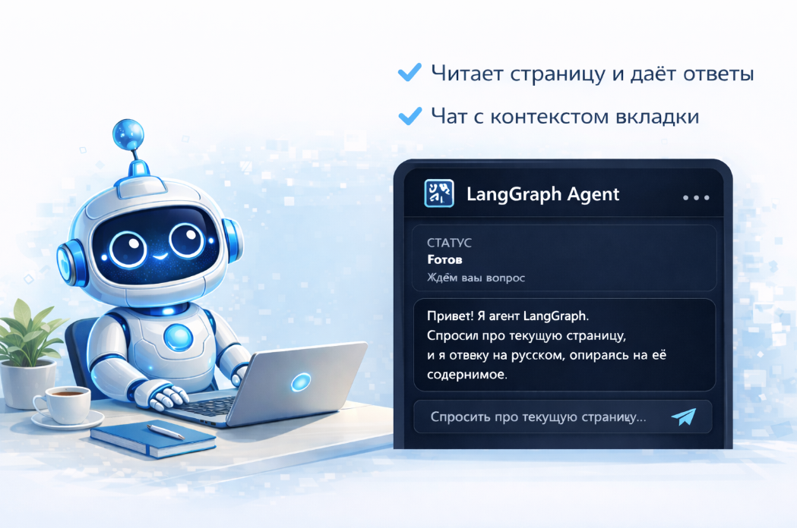
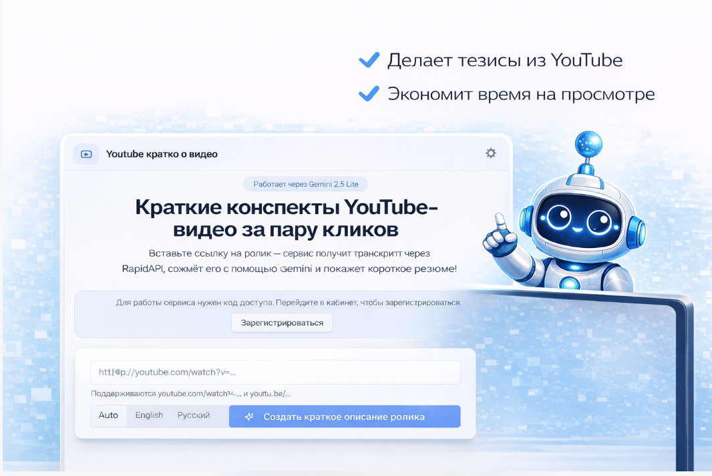
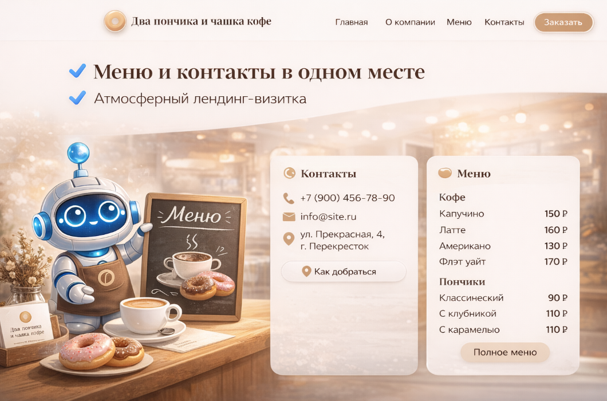
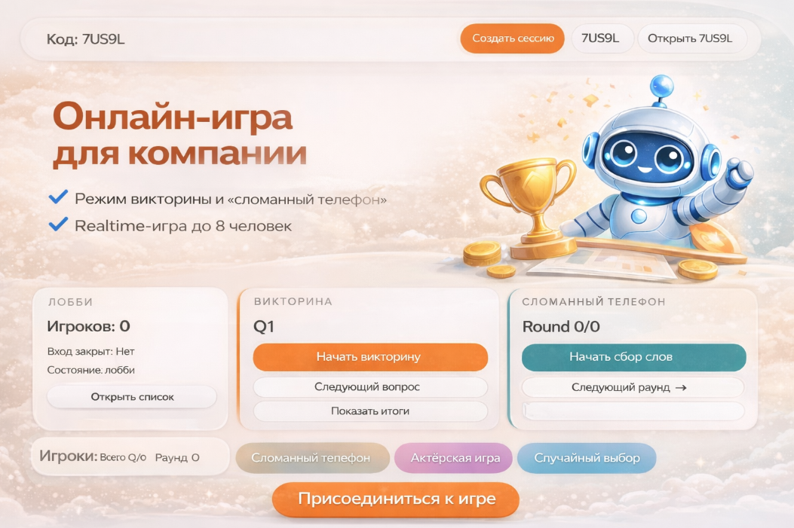

Telegram-бот расписания трансляций
Что решает: убирает ручные напоминания об эфирах. Как работает: отслеживает расписание и шлёт уведомления вовремя. Как адаптирую: подключу ваши данные и настрою сценарии под команду.

Андрей Поляков7 лет я управлял рекламой в Яндекс.Директе и знаю, на что уходит время в бизнесе. Теперь создаю ИИ-инструменты, которые снимают рутину: боты, дашборды, автоотчёты, голосовые помощники и автономные агенты.
Написать в TelegramЯ не просто пишу код — я понимаю, зачем он нужен вашему бизнесу.
7 лет я управлял рекламными кампаниями в Яндекс.Директе. Знаю, какие метрики важны, где теряются деньги и что реально нужно видеть в отчётах.
Создаю ботов, интеграции и веб-сервисы, которые работают автономно. Превращаю ручные процессы в инструменты.
Объясняю без технического жаргона. Показываю результат, а не код. Вы получаете инструмент, который понятен без инструкции.
Ниже учебные проекты. Они показывают мой подход к разработке и могут быть адаптированы под реальные бизнес-задачи.

Что решает: убирает ручные напоминания об эфирах. Как работает: отслеживает расписание и шлёт уведомления вовремя. Как адаптирую: подключу ваши данные и настрою сценарии под команду.

Что решает: предупреждает о риске превышения лимитов. Как работает: собирает метрики и шлёт отчёты с алертами. Как адаптирую: настрою пороги, формат отчётов и нужные сервисы.

Что решает: сокращает время на поиск информации. Как работает: читает контекст страницы и отвечает в чате. Как адаптирую: добавлю ваши промпты, источники и логику ответов.

Что решает: даёт суть длинных видео за минуты. Как работает: берёт транскрипт и делает короткий конспект. Как адаптирую: настрою формат сводки под ваш процесс.

Что решает: даёт понятную онлайн-витрину с контактами. Как работает: показывает меню, преимущества и CTA на одном экране. Как адаптирую: соберу структуру и стиль под ваш бренд.

Что решает: даёт готовый формат командного вовлечения онлайн. Как работает: комнаты, роли и realtime-сценарии для участников. Как адаптирую: изменю механику и интерфейс под ваш формат.

Что решает: убирает ручной сбор данных из Яндекс Директа для клиентских отчётов. Как работает: загружаешь Excel из Директа — система строит интерактивный отчёт с графиками и динамикой. Каждый клиент получает свою ссылку. Как адаптирую: подключу ваши кампании, настрою шаблоны отчётов и доступы.

Что решает: нужен сайт, который вызывает доверие с первых секунд. Как работает: премиальный лендинг с glassmorphism-эффектами, мягкими градиентами и вложенной архитектурой карточек. Как адаптирую: перенесу стиль на вашу нишу, настрою контент и SEO.

Что решает: убирает ручной сбор метрик из YouTube, VK и Telegram. Как работает: единый дашборд собирает статистику всех площадок, показывает динамику и проводит ИИ-аудит контента. Обновляется ежедневно. Как адаптирую: подключу ваши каналы и настрою метрики под задачи.

Что решает: убирает ручной мониторинг новостей и написание постов. Как работает: автономный агент на вашем компьютере собирает новости из RSS, GitHub и HuggingFace, классифицирует и генерирует контент через локальную LLM. Как адаптирую: настрою источники, стиль контента и интеграцию с Notion.

Что решает: текстовый ввод не всегда удобен — иногда быстрее сказать голосом. Как работает: записывает речь, транскрибирует через Whisper, ведёт диалог через LLM и возвращает ответ. Как адаптирую: настрою под ваши задачи — поддержка, опросы, голосовые команды.

Что решает: важные письма теряются среди спама и рассылок. Как работает: ИИ-агент с 4-уровневой защитой читает Gmail, классифицирует письма и показывает результат в live-панели. Работает через Codex CLI — полная изоляция. Как адаптирую: настрою правила классификации и уведомлений под вашу почту.
Не продаю технологии — решаю конкретные проблемы.
Технически: TypeScript, Python, Next.js, Telegram Bot API, Cloudflare Workers, Supabase, FastAPI, LangGraph, Gemini API, LLM, Agents
Управлял рекламными кампаниями в Яндекс.Директе: настройка, аналитика, оптимизация бюджетов.
Реализованных проектов: боты, веб-сервисы, ИИ-помощники, агенты — от идеи до рабочего инструмента.
Владею инструментами ИИ-автоматизации: создаю решения, которые работают автономно и экономят время.
Напишите в Telegram, что хотите автоматизировать. В ответ предложу понятный вариант решения и шаги запуска.
Можно написать в свободной форме: что нужно сделать, для кого инструмент и какой результат вы хотите получить.
Сайт не собирает и не передаёт персональные данные: нет форм, нет аналитики, нет трекеров и сторонних скриптов. Если сайт размещён на хостинге, он может вести технические логи по своим правилам.